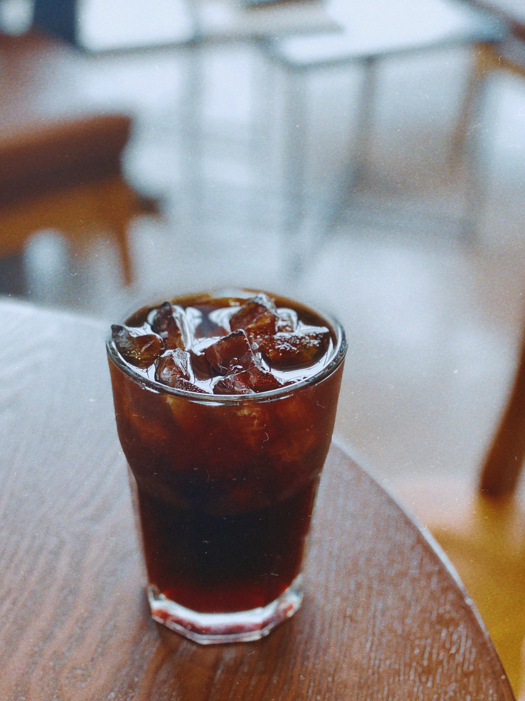

Caffè Americano (also known as Americano or American; Italian pronunciation: [kafˈfɛ ameriˈkaːno]; Spanish: café americano, literally American coffee) is a type of coffee drink prepared by diluting an espresso with hot water, giving it a similar strength to, but different flavor from, traditionally brewed coffee. Its strength varies with the number of shots of espresso and amount of water added. The name is also spelled with varying capitalization and use of diacritics: e.g., café americano.
